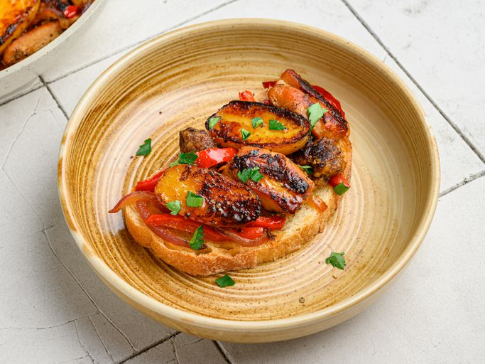

One-Pan Chicken, Sausage, Peppers, and Potatoes

Description
This is another Chef John classic, a stovetop take on a beloved Italian-American comfort dish. Everything cooks together in a single skillet, with juicy chicken, savory sausage, tender potatoes, and colorful peppers all building flavor together in one pan. The name says it all: chicken, sausage, peppers, and potatoes, and as soon as you see the words, you know exactly what you're getting into.
The beauty of this dish is in its simplicity. The sweet peppers and savory sausage complement the juicy chicken, while the potatoes soak up all the delicious juices from the pan. It comes together with minimal prep and even less cleanup, making it the kind of dependable, crowd-pleasing dinner you'll find yourself coming back to again and again, whether it's a busy weeknight or a lazy Sunday with the family.
Ingredients
- 2 tablespoons olive oil, or more as needed
- 1 sweet Italian sausage, casing removed
- 3 small Yukon Gold potatoes, cut in half
- 3 boneless, skinless chicken thighs, cut into 2-inch pieces
- 1 teaspoon kosher salt, or to taste
- freshly ground black pepper to taste
- 1 pinch cayenne pepper
- 1 teaspoon dried Italian herb blend
- 1 small red onion, sliced
- 1 cup sliced red bell pepper
- ½ cup chicken broth
- ½ lemon, juiced
- 2 slices Italian bread, toasted
- tablespoon chopped fresh Italian parsley
Steps
- Gather all ingredients.
- Pour 2 tablespoons olive oil into a nonstick skillet. Break up sausage into small pieces and add to the pan; add potato pieces sporadically, flesh-side down. Place chicken pieces throughout the pan, smooth side down. Season with salt, black pepper, and cayenne. Sprinkle over Italian herbs.
- Scatter over sliced onion and bell peppers. Sear over high heat until sausage starts to brown, about 5 minutes.
- Reduce heat to medium-high, cover, and cook until potatoes are just tender, about 5 minutes.
- Add broth and cook until reduced by at least half.
- Stir and squeeze over lemon juice. Taste and adjust if needed.
- Serve over toasted bread and top with parsley.
Home